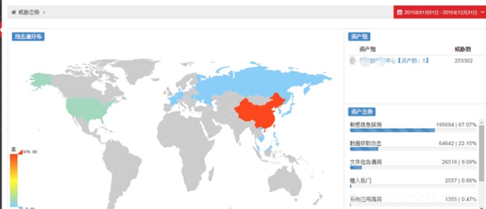
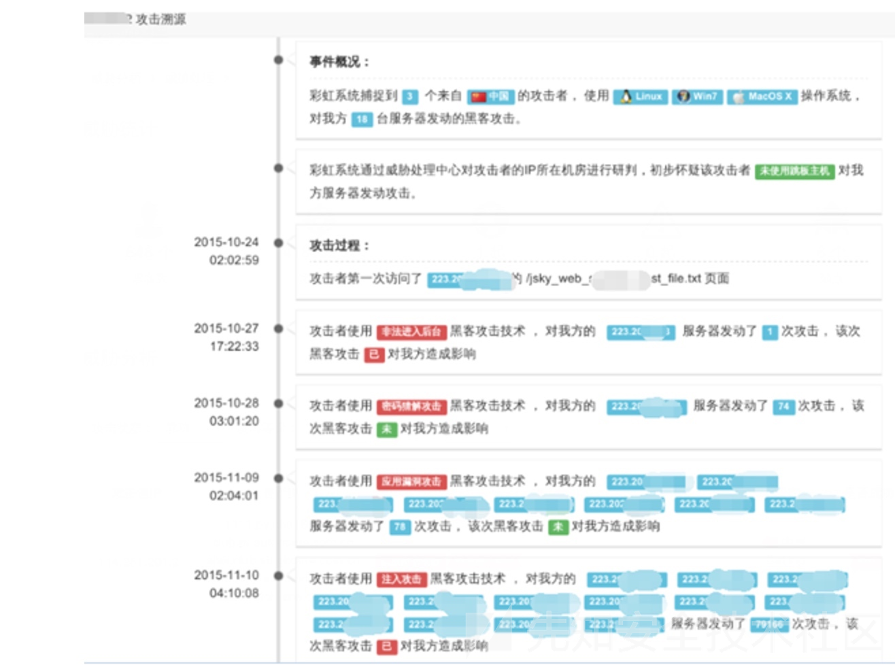

日志分析方法
分析日志的常规办法
- 分析日志的常规办法
- 常规应急响应情况 = 常见的几种被黑情况
- 带宽被占满，导致网站响应速度变慢，用户无法正常访问
- 造成已知经济损失，客户被恶意转账、对账发现金额无端流失
- 网站被篡改或者添加暗链，常见为黑客黑页、博彩链接等
- 建议动作
- 先断网
- 对已知被黑的服务器进行断网
- 再分析日志
- 开始进行日志分析操作
- 分析思路和对策
- 对于相对初级的黑客：会上传webshell（后门文件）
- 对策：检查是否存有明显的webshell
- 检查方式
- 搜索最近一周被创建、更新的脚本文件
- 根据网站所用语言，搜索对应webshell文件常见的关键字
- 后续操作
- 找到webshell后门文件后
- 通过查看日志中谁访问了webshell
- 然后得出攻击者IP
- 再通过IP提取出攻击者所有请求进行分析
- 举例说明
- 可能我们得到类似这样一个日志结果
00:01 GET http://localhost/index.php 9.9.9.9 200 [正常请求] 00:02 GET http://localhost/index.php?id=1' 9.9.9.9 500 [疑似攻击] 00:05 GET http://localhost/index.php?id=1' and 1=user() or ''=' 9.9.9.9 500 [确认攻击] 00:07 GET http://localhost/index.php?id=1' and 1=(select top 1 name from userinfo) or ''=' 9.9.9.9 500 [确认攻击] 00:09 GET http://localhost/index.php?id=1' and 1=(select top 1 pass from userinfo) or ''=' 9.9.9.9 500 [确认攻击] 00:10 GET http://localhost/admin/ 9.9.9.9 404 [疑似攻击] 00:12 GET http://localhost/login.php 9.9.9.9 404 [疑似攻击] 00:13 GET http://localhost/admin.php 9.9.9.9 404 [疑似攻击] 00:14 GET http://localhost/manager/ 9.9.9.9 404 [疑似攻击] 00:15 GET http://localhost/admin_login.php 9.9.9.9 404 [疑似攻击] 00:15 GET http://localhost/guanli/ 9.9.9.9 200 [疑似攻击] 00:18 POST http://localhost/guanli/ 9.9.9.9 200 [疑似攻击] 00:20 GET http://localhost/main.php 9.9.9.9 200 [疑似攻击] 00:20 POST http://localhost/upload.php 9.9.9.9 200 [疑似攻击] 00:23 POST http://localhost/webshell.php 9.9.9.9 200 [确认攻击] 00:25 POST http://localhost/webshell.php 9.9.9.9 200 [确认攻击] 00:26 POST http://localhost/webshell.php 9.9.9.9 200 [确认攻击]- 注：为清晰呈现攻击路径，此日志为人工撰造
- 通过找到后门文件
webshell.php，得知攻击者IP为9.9.9.9 - 提取了此IP所有请求
- 从这些请求可以清楚看出攻击者从
00:01访问网站首页 - 然后使用了单引号对网站进行SQL注入探测
- 然后利用报错注入的方式得到了用户名和密码
- 随后扫描到了管理后台进入了登录进了网站后台
- 上传了webshell文件
- 进行了一些恶意操作
- 通过找到后门文件
- 注：为清晰呈现攻击路径，此日志为人工撰造
- 结论
- 从以上分析我们可以得出，
/index.php这个页面存在SQL注入漏洞- 后台地址为
/guanli.php,/upload.php可直接上传webshell
- 后台地址为
- 从以上分析我们可以得出，
- 补救方法
- 修复注入漏洞
- 更改管理员密码
- 对文件上传进行限制
- 限制上传目录的执行权限
- 删除webshell
- 可能我们得到类似这样一个日志结果
- 对于相对初级的黑客：会上传webshell（后门文件）
- 常规应急响应情况 = 常见的几种被黑情况
攻击溯源
- 攻击溯源
- 背景：由于各种原因，实现攻击溯源难度较大
- 已知=现状
- 某些甲方内部安全团队有尝试实现过，但至今未要到产品实现的效果图
- 某人找到某安全公司有一个类似的产品，以硬件方式实现的流量监控，从而获取到日志进行分析
- 可以记录并分析整个请求包和响应包
- 这可比从日志文件中拿到的信息全面多了
- 从而将日志溯源分析降低了一个难度
- 信息
- 请求和响应数据完整，能进行更大维度的日志分析
- 安全关联库较多，能关联出更为丰富的信息
- 推测
- 他们内部有一个IP库，每个IP是否为代理IP，所处什么机房都有相应的记录
- 或者调用了IP位置查询接口，从而判断IP是否为代理IP、机房IP、个人上网出口IP，继而判定未使用跳板主机
- 他们内部有一个IP库，每个IP是否为代理IP，所处什么机房都有相应的记录
- 这可比从日志文件中拿到的信息全面多了
- 效果图
- 
- 

- 可以记录并分析整个请求包和响应包
- 其他更好的思路
- 正常总是基本相似，异常却各有各的异常
- -> 用大数据（统计、建模）实现
- 搜集大量正常请求，为每个请求的所有参数的值定义正常模型
- 通过Waf或者攻击规则来剔除所有发起过攻击请求的IP
- 从而得到所有来自用户的正常请求，将每个正常请求构造出对应的正常模型
- 那么关于此请求的正常模型则为
[N,N,N],不匹配此模型的请求则为异常请求 - 效果
- 当对日志中的请求建立完正常的模型，通过正常模型来匹配找出所有不符合模型的请求时，发现效果的确不错
- -> 用大数据（统计、建模）实现
- 正常总是基本相似，异常却各有各的异常
安全关联库
- 安全关联库
- 举例
- 全球IPV4信息知识库
- 包括该IP对应的国家地区、对应的操作系统详情、浏览器信息、电话、域名等等。并对全球IP地址实时监控，通过开放的端口、协议以及其历史记录，作为数据模型进行预处理
- 全球虚拟空间商的IP地址库
- 如果访问者属于该范围内，则初步可以判定为跳板IP
- 全球域名库
- 包括两亿多个域名的详细信息，并且实时监控域名动向，包括域名对应的IP地址和端口变化情况，打造即时的基于域名与IP的新型判断技术，通过该方式可以初步判断是否为C&C服务器、黑客跳板服务器
- 黑客互联网信息库
- 全球部署了几千台蜜罐系统，实时收集互联网上全球黑客动向
- 独有的黑客IP库
- 对黑客经常登录的网站进行监控、对全球的恶意IP实时获取
- 黑客工具指纹库
- 收集了所有公开的（部分私有的）黑客工具指纹，当攻击者对网站进行攻击时，可以根据使用的黑客工具对黑客的地区、组织做初步判断
- 黑客攻击手法库
- 收集了大量黑客攻击手法，以此来定位对应的黑客或组织
- 其他互联网安全厂商资源
- 该系统会充分利用互联网各种资源，比如联动50余款杀毒软件，共同检测服务器木马程序
- 全球IPV4信息知识库
- 举例